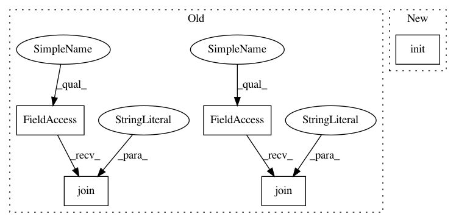

101c215125c4142e853985c53e62c9b4b73dc230,python/ray/tests/test_tempfile.py,,test_raylet_socket_name,#Any#,81
Before Change
def test_raylet_socket_name(shutdown_only):
ray.init(
raylet_socket_name=os.path.join(ray.utils.get_user_temp_dir(),
"i_am_a_temp_socket"))
assert os.path.exists(
os.path.join(ray.utils.get_user_temp_dir(),
"i_am_a_temp_socket")), "Specified socket path not found."
ray.shutdown()
try:
os.remove(
os.path.join(ray.utils.get_user_temp_dir(), "i_am_a_temp_socket"))
except OSError:
pass // It could have been removed by Ray.
cluster = Cluster(True)
cluster.add_node(
raylet_socket_name=os.path.join(ray.utils.get_user_temp_dir(),
"i_am_a_temp_socket_2"))
assert os.path.exists(
os.path.join(
ray.utils.get_user_temp_dir(),
After Change
def test_raylet_socket_name(shutdown_only):
sock1 = unix_socket_create_path("i_am_a_temp_socket_1")
ray.init(raylet_socket_name=sock1)
unix_socket_verify(sock1)
ray.shutdown()
try:
unix_socket_delete(sock1)
In pattern: SUPERPATTERN
Frequency: 3
Non-data size: 5
Instances
Project Name: ray-project/ray
Commit Name: 101c215125c4142e853985c53e62c9b4b73dc230
Time: 2020-06-12
Author: mehrdadn@users.noreply.github.com
File Name: python/ray/tests/test_tempfile.py
Class Name:
Method Name: test_raylet_socket_name
Project Name: ray-project/ray
Commit Name: 101c215125c4142e853985c53e62c9b4b73dc230
Time: 2020-06-12
Author: mehrdadn@users.noreply.github.com
File Name: python/ray/tests/test_tempfile.py
Class Name:
Method Name: test_temp_plasma_store_socket
Project Name: polyaxon/polyaxon
Commit Name: b20fc24180a7591d6e1850ebb0fc2812205bdfdf
Time: 2020-06-22
Author: mouradmourafiq@gmail.com
File Name: examples/in_cluster/kubeflow/tfjob/run.py
Class Name:
Method Name:
Project Name: ray-project/ray
Commit Name: 101c215125c4142e853985c53e62c9b4b73dc230
Time: 2020-06-12
Author: mehrdadn@users.noreply.github.com
File Name: python/ray/tests/test_tempfile.py
Class Name:
Method Name: test_raylet_socket_name